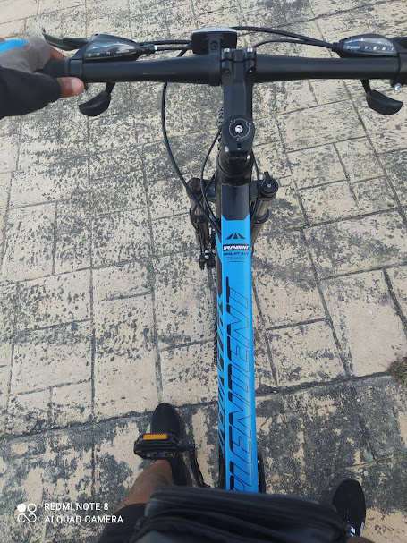
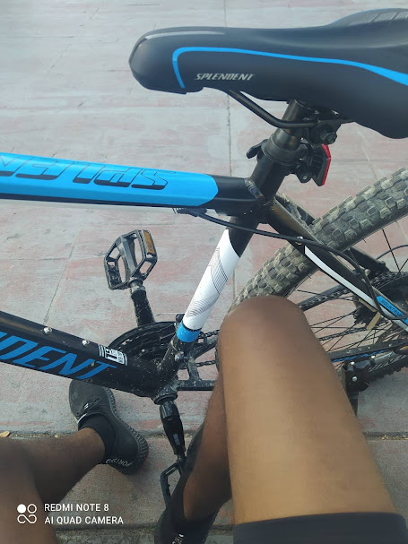
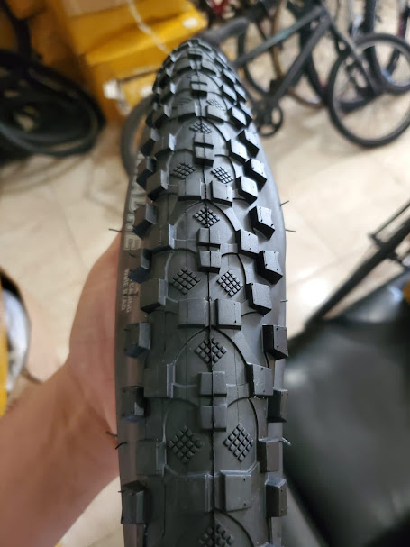

En el año 2021, en pleno centro de Santo Domingo, Balentín decidió hacer realidad un sueño que llevaba años cultivando: abrir su propia tienda de bicicletas. A pesar de no contar con grandes recursos, su pasión por el ciclismo y su conocimiento sobre el mundo de las bicicletas lo impulsaron a dar el paso. Así nació VeloX, una tienda especializada en bicicletas y todo lo relacionado con el ciclismo.
Balentín siempre había sido un entusiasta de las bicicletas, desde joven. Había recorrido muchas rutas en la ciudad y participado en varias competiciones, pero notaba que, en Santo Domingo, había una falta de lugares donde los ciclistas pudieran encontrar productos de calidad y, sobre todo, recibir asesoría profesional. Así fue como, con mucha determinación, decidió abrir su propia tienda para cubrir esa necesidad.
Al principio, VeloX era un pequeño espacio en una calle tranquila de la ciudad, pero con el tiempo, Balentín se dio cuenta de que no solo vendía bicicletas: ofrecía un estilo de vida. Desde el primer día, la tienda estuvo llena de ciclistas de todas las edades, desde niños que aprendían a montar hasta adultos que volvían a sus primeras rutas sobre ruedas. La tienda se convirtió rápidamente en un lugar de encuentro para todos los amantes del ciclismo.
Pero un día Balentín se enfrentó a un gran desafío. Un mensaje inesperado apareció en su correo electrónico: "Tu negocio ha sido borrado de la existencia digital. Si quieres recuperarlo, deberás reinventarlo. Usa la tecnología, la creatividad y tu ingenio para traerlo de vuelta." Estas palabras resonaron en su mente y lo impulsaron a dar el siguiente paso en la evolución de su empresa, explorando nuevas estrategias digitales para seguir conectando con su comunidad ciclista y expandir aún más el alcance de VeloX.
Hoy, VeloX sigue siendo el lugar preferido por los ciclistas en Santo Domingo, gracias a la visión de Balentín. Su tienda no es solo un lugar de venta, sino un espacio donde los ciclistas encuentran apoyo, comunidad y, sobre todo, una pasión compartida por las bicicletas. Y todo comenzó en 2021, cuando un solo sueño y una bicicleta marcaron el inicio de un viaje que sigue pedaleando hacia el futuro.